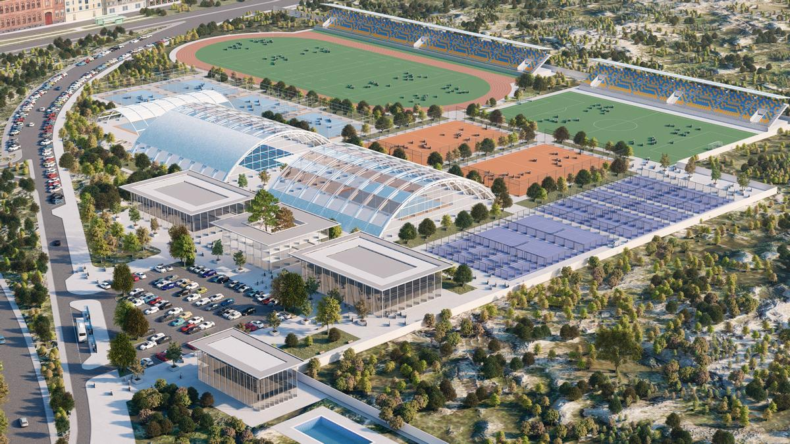

Bienvenido a la ciudad deportiva de Tomelloso
Instalaciones
La ciudad deportiva de Tomelloso cuenta con unas instalaciones de primer nivel, con una amplia variedad de servicios y actividades para todos los públicos.
Entre las instalaciones de las que disponemos, destacamos:
- Piscina climatizada
- Piscina al aire libre
- Gimnasio
- Pistas de tenis
- Pistas de pádel
- Canchas de baloncesto
- Canchas de fútbol
- Pabellón (fúbol sala, balonmano, etc.)
Horarios
La ciudad deportiva de Tomelloso abre de lunes a domingo, de 8:00 a 22:00.
Para más información sobre los horarios de las actividades dirigidas, consulta nuestro calendario de actividades.